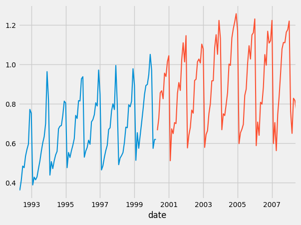
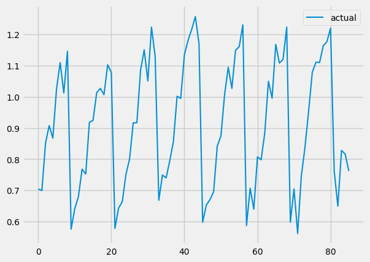
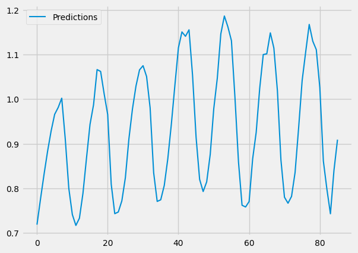
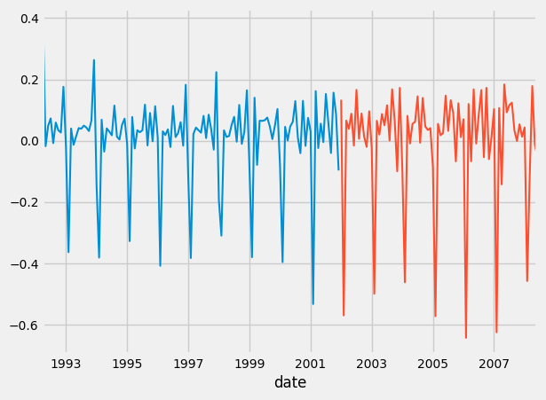
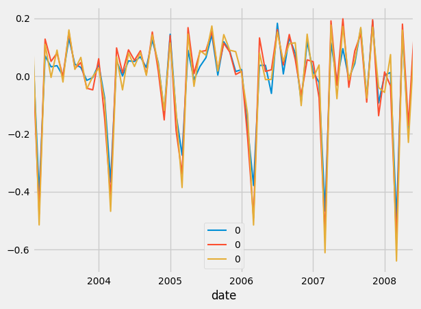

Part 2 - Implementing a Full ARIMA model from SCRATCH!
Here, we will build off the last lesson and properly implement an Autoregressive, Integrated, Moving Average Model.
As usual, I will be using the same data as in the previous lesson.
The fundamental change this time, is that we will have NumPy, an open-source numerical computation Python tool, handle all of these multiplications for us.
I believe that when running this algorithm, the problem would occur: \(\frac{\partial \text{MSE}}{\partial b_i} = \frac{2}{n} \cdot \sum_{i=p}^n x_{t-i} \cdot (x_{t-p}\cdot b_{t-p} +\ldots +x_{t-i}\cdot b_{t-i} - y_t)\)
Previously, we relied solely on Python arithmetic for this, but there is also an alternative method: The Dot Product!
\[\beta = (X^T \cdot X)^{-1} \cdot X^T \cdot y\] \[\beta = X^{+} \cdot y\]The above is a super simplified version of something called the Moore-Penrose Inverse. It is somewhat technical, so I decided to keep that out of this lesson.
The Code
To keep this simple, I will first show you the new code:
import math
def prepare_data(data, order):
X, y = [], []
for i in range(order, len(data)):
X.append(data.iloc[i - order:i])
y.append(data.iloc[i])
return np.array(X), np.array(y)
def prepare_data_errors(data, order):
X, y = [], []
for i in range(order, len(data)):
X.append(data.errors.iloc[i - order:i])
y.append(data.y.iloc[i])
return np.array(X), np.array(y)
def autoregressive_model (data, learning_rate, epoch, order, cost):
#prepare data
X, y = prepare_data(data, order)
#weights = np.random.randn(order)
weights = [0 for _ in range(order)]
bias = 0
for _ in range(epoch):
predictions = np.dot(X, weights)
error = predictions - y
if cost == 'mse':
gradient_weights = 2 * np.dot(X.T, error) / len(X)
gradient_bias = 2 * np.sum(error) / len(X)
elif cost == 'mae':
#print(error/np.abs(error))
gradient_weights = np.dot(X.T, error/np.abs(error)) / len(X)
gradient_bias = np.sum(error/np.abs(error)) / len(X)
elif cost == 'rmse':
gradient_weights = (2 * np.dot(X.T, error) / len(X)) / 2 / np.sqrt(np.sum(np.square(error))/len(X))
#gradient_bias = np.sum(error) / len(X) / np.sqrt(sum(error))
gradient_bias = np.sum(error) / len(X) / np.sqrt(np.sum(np.square(error))/len(X))
weights -= learning_rate * gradient_weights
#bias -= learning_rate * gradient_bias
return weights, bias
As you can see, it looks pretty similar to the previous function. However, each arithmetic operation (like calculating the error or running the gradient descent algorithm) is handled with NumPy:
for _ in range(epoch):
predictions = np.dot(X, weights)
error = predictions - y
The Dot Product, Simplified
If you don’t know how a dot product works, please review this resource here.
But if I were to explain it in simple terms, I would say that it is a method to finding the product of two vectors in space. When I say that, you might think to multiply their lengths, but this is false as it doesn’t account for vectors that face different directions. Thus, there is a super simple method (which I will not explain right now; if you want, please view the source above) that looks like this for taking the dot product:
\[let \vec{b} = \begin{bmatrix}b_1 \\ b_2 \\ \vdots \\ b_i\end{bmatrix}\]and \(let \vec{X} = \begin{bmatrix}x_1 \\ x_2 \\ \vdots \\ x_i\end{bmatrix}\)
Then, their dot product will be: \(\vec{b} \cdot \vec{X} = (b_1 \cdot x_1 + b_2 \cdot x_2 + \ldots + b_i \cdot x_i)\)
And you might be able to see, that this is actually the same operation we do when we calculate our error in the autoregressive function: \((x_{t-p}\cdot b_{t-p} +\ldots +x_{t-i}\cdot b_{t-i})\)
Thus, we can run our Gradient Descent algorithm with NumPy dot product operations; this way, we can allow NumPy to handle all of the arithmetic operations, which was causing an issue in our previous try.
I also put in the calculations for all of the other cost functions we will be looking at in this lesson, but we will discuss those later. Furthermore, the below line is specifically when we update the weights (they are treated as an array of weights, for simplicity):
weights -= learning_rate * gradient_weights
Anyways, if you run the above code in succession with this:
train_size = .5
used_data = data
used_data.columns = ['y']
train = used_data[:int(len(used_data)*train_size)]
test = used_data[int(len(used_data)*train_size):]
train.plot()
test.plot()
beta, bias = autoregressive_model(train, 0.1, 100, 12, 'mse')
x_test, y_test = prepare_data(test, 12)
x_plot, y_plot = prepare_data(test, 12)
predictions = np.dot(x_test, beta)+bias
pred = pd.DataFrame(predictions, columns=['Predictions'])
actual = pd.DataFrame(y_plot, columns=['actual'])
actual.plot()
pred.plot()
plt.show()
You should get graphs like these:   
And as you can see, our predictions look very similar to our actual values. We DID it!!!
We made our own autoregressive model!! Now all we have to do is implement this and a moving average model together in the ARIMA.
So, the only thing we changed from the last lesson is how we dealt with the arithmetic operation, but fundamentally they are the same.
Implementing a Moving Average Model
As you have probably heard what a Moving Average Model is, from the previous lessons, it is basically like an autoregressive model, but by taking the average.
A moving average model is a regression against past errors (from the autoregressive function). Mathematically, it looks like this:
\[y_t = c + \theta_1 \cdot \mathcal{E}_{t-1} + \theta_2 \cdot \mathcal{E}_{t-2} + \ldots + \theta_q \cdot \mathcal{E}_{t-q} \tag{1}\]Where c is the mean of the series, and q is the order/lag amount.
In theory, any MA(q) can be represented as AR(p), this is known as invertibility. There is some really nice math behind this that I would really like to dive into; however, I am afraid it might be out of scope, so I might touch on it briefly at the end.
Below is my autoregressive, moving average model:
def moving_average_model(errors, learning_rate, epoch, order, cost):
#prepare data
X, y = [], []
for i in range(order, len(errors)):
X.append(data.iloc[i - order:i])
y.append(data.iloc[i])
X = np.array(X)
y = np.array(y)
#weights = np.random.randn(order)
theta = [0 for _ in range(order)]
bias = 0
for i in y:
bias += i
bias = (bias)/len(y)
for _ in range(epoch):
predictions = np.dot(X, theta)
error = predictions - y
if cost == 'mse':
gradient_weights = 2 * np.dot(X.T, error) / len(X)
gradient_bias = 2 * np.sum(error) / len(X)
elif cost == 'mae':
gradient_weights = np.dot(X.T, error/np.abs(error)) / len(X)
gradient_bias =np.sum(error/np.abs(error)) / len(X)
elif cost == 'rmse':
gradient_weights = (2 * np.dot(X.T, error) / len(X)) / 2 / np.sqrt(np.sum(np.square(error))/len(X))
gradient_bias = 2 * np.sum(error) / len(X)
theta -= learning_rate * gradient_weights
#bias -= learning_rate * gradient_bias
return theta, bias
This is very, very similar to the autoregressive function. I will leave the above function to the reader to figure out (I view this as a nice exercise to allow the reader to be more engaged and in-tune to what is being said).
Finally, the ARIMA Model
Below, is part of the code for implementing the ARIMA model, it is dependent on the previous two functions we discussed:
def reverse_stationary_fn(ori_x, new_x):
x = new_x.copy()
x += ori_x.shift(1)
x += ori_x.diff().shift(1)
return x
def un_difference_data(data):
new_data = data.copy()
for i in range(1, len(data)):
new_data.iloc[i] = data.iloc[i]+data.iloc[i-1]
return new_data
def squared_error(pred, actual):
error = 0
for i in range(len(pred)):
#print(pred.iloc[i].item())
error += (actual[i]-pred.iloc[i].item())**2
return error
def first_and_last(data):
new_data = []
for i in range(len(data)):
new_data.append((data[i][0], data[i][11]))
return new_data
def arima(data, p, q, epoch, train_size, cost_function):
train_ori = data[:int(len(data)*train_size)]
test_ori = data[int(len(data)*train_size):]
stationary = difference_data(data)
#stationary = data
train = stationary[:int(len(stationary)*train_size)]
test = stationary[int(len(stationary)*train_size):]
#prepare data
X_train, y_train = prepare_data(train, p)
X_test, y_test = prepare_data(test, p)
start = test.index[12]
beta = []
theta = []
ar_pred = []
ma_pred = []
train_pred = []
for e in range(epoch):
#beta, bias = autoregressive_model(train, 0.001, 1, p)
#ar_predictions = np.dot(X_train, beta)+bias
beta, bias = autoregressive_model(train, 0.2, 300, p, cost_function)
ar_pred = np.dot(X_train, beta)+bias
train_pred = ar_pred
errors = ar_pred - y_train
df_errors = pd.DataFrame(data={'errors': errors, 'y': y_train})
theta, mean = moving_average_model(df_errors, 0.01, 50, q, cost_function)
x_errors, y_errors = prepare_data_errors(df_errors, q)
Let’s walk through it together. So first, in the ARIMA function, we split our data into training and testing, make that data stationary (this is the Integrating part of ARIMA, please refer to prior lessons), and we use a prepare_data function to output our data in a specific format (where they are in batches):
train_ori = data[:int(len(data)*train_size)]
test_ori = data[int(len(data)*train_size):]
stationary = difference_data(data)
#stationary = data
train = stationary[:int(len(stationary)*train_size)]
test = stationary[int(len(stationary)*train_size):]
#prepare data
X_train, y_train = prepare_data(train, p)
X_test, y_test = prepare_data(test, p)
We start at 12 (because that is our order for this dataset; ideally I should of not of have hard coded this!) and create our weights and predictions arrays.
Next, in every epoch (pronounced e-po-ck; I learned this a bit too late!) we train an autoregressive model, get it’s predictions and the prediction errors, and then feed these residuals into our moving average model (by first converting it to the right format, like a Pandas DataFrame):
for e in range(epoch):
#beta, bias = autoregressive_model(train, 0.001, 1, p)
#ar_predictions = np.dot(X_train, beta)+bias
beta, bias = autoregressive_model(train, 0.2, 300, p, cost_function)
ar_pred = np.dot(X_train, beta)+bias
train_pred = ar_pred
errors = ar_pred - y_train
df_errors = pd.DataFrame(data={'errors': errors, 'y': y_train})
theta, mean = moving_average_model(df_errors, 0.01, 50, q, cost_function)
x_errors, y_errors = prepare_data_errors(df_errors, q)
# BELOW: GET THE PREDICTIONS
ar_predictions = np.dot(X_test, beta)+bias #FOR FULL
test_errors = ar_predictions - y_test
df_test_errors = pd.DataFrame(data={'errors': test_errors, 'y': y_test})
x_test_errors, y_test_errors = prepare_data_errors(df_test_errors, q)
ma_predictions = np.dot(x_test_errors, theta)#+mean
# BELOW: COMBINE THESE TO GET ARIMA PREDICTIONS
pred = []
for i in range(len(ma_predictions)):
pred.append(ar_predictions[i]+ma_predictions[i])
pred = pd.DataFrame(pred)
data_range = pd.date_range(start=start, periods=len(pred), freq='M')
data_range = test.index[13:]
pred.set_index(data_range, inplace=True)
#return un_difference_data(train), test_ori, un_difference_data(pred)
#train_pred = pd.DataFrame(train_pred)
return X_test, y_test, train, test, pred
With the current AR and MA predictions, we add them up to the the ARIMA predictions.
Finally, we do some formatting on this final dataset, and Voila! A full ARIMA model coded from SCRATCH!!
(If you want, play around with all of the hyperparameters, like epoch size, the order, or everything here: autoregressive_model(train, 0.2, 300, p, cost_function)).
Next up, I wanted compare the performance of various Cost functions, just for funzzies!
Cost Functions
There are many different cost functions out there, and each one can either help or hinder different models. In this lesson, I will show three main and common cost functions Mean Squared Error(MSE), Mean Absolute Error(MAE), and Root Mean Squared Error(RMSE).
I have already coded in each cost function and their partial derivatives (I highly suggest you go through the math yourself on these, if you need any help, just reach out), so all we have to do is compare them here:
x_test, y_test, training, test, predictions_mse = arima(data=data, p=12, q=1, epoch=1, train_size=0.6, cost_function='mse')
print("MSE squared error: ", squared_error(predictions_mse, y_test))
x_test, y_test, training, test, predictions_mae = arima(data=data, p=12, q=1, epoch=1, train_size=0.6, cost_function='mae')
print("MAE squared error: ", squared_error(predictions_mae, y_test))
x_test, y_test, training, test, predictions_rmse = arima(data=data, p=12, q=1, epoch=1, train_size=0.6, cost_function='rmse')
print("RMSE squared error: ", squared_error(predictions_rmse, y_test))
And below, we plot them:
ax1=training.plot()
test.plot()
ax2 = predictions_mse.plot()
predictions_mae.plot(ax=ax2)
predictions_rmse.plot(ax=ax2)
Which should result in this: 
Above, is the data in stationary form.

And as you can see, they all seem very similar. But if you looked at the print statements:
MSE squared error: 1.0386990408088193
MAE squared error: 0.9324816705511001
RMSE squared error: 0.8846827347232624
We see that RMSE had the least error.
Now, one thing I left out is turning this data make to non-stationary data. Since this lesson is already getting long, I would like to leave this up to the reader!
Subscribe to Burak Ayyorgun
Get the latest posts delivered right to your inbox